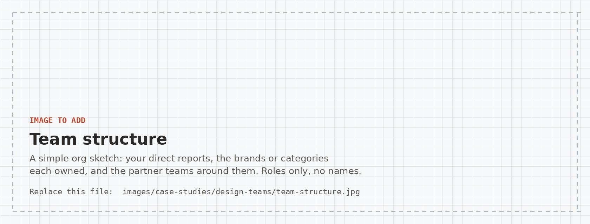
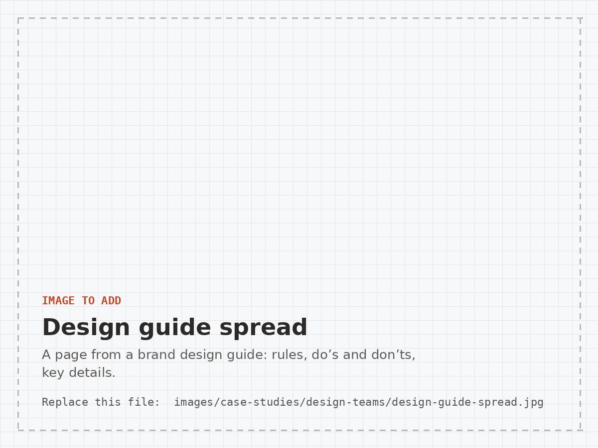
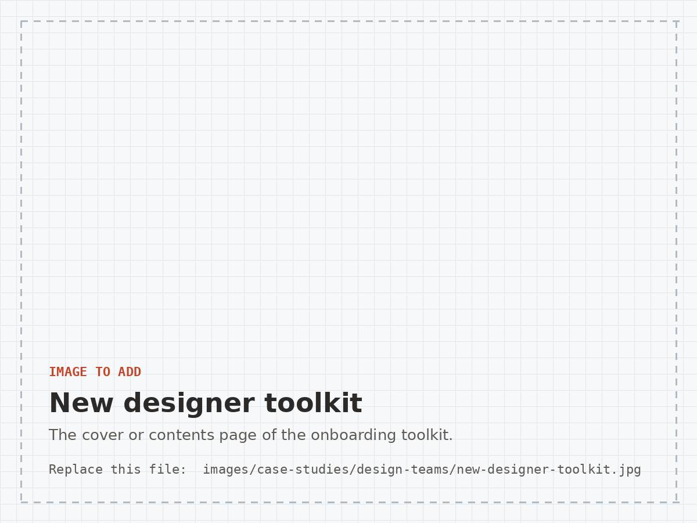
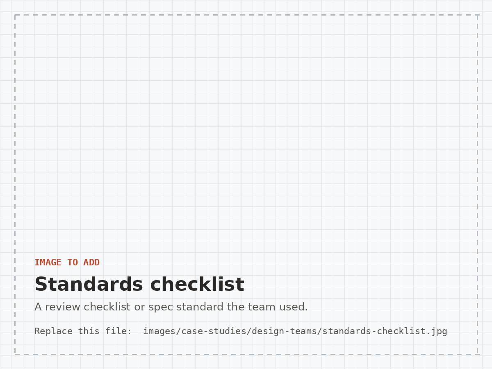
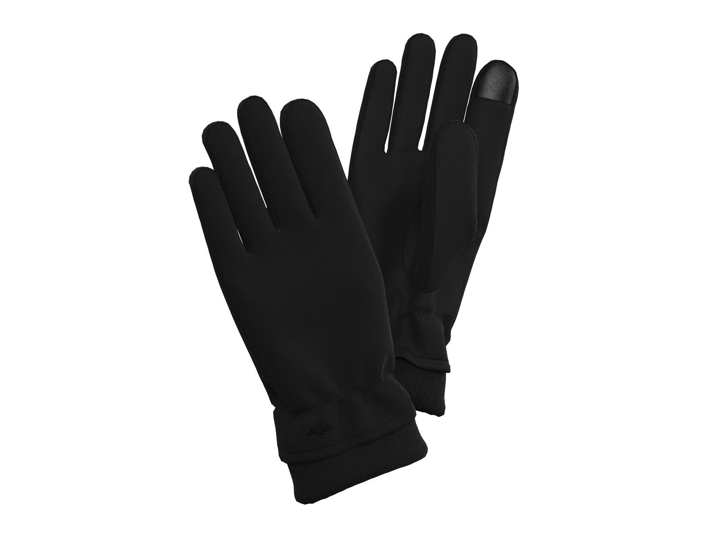
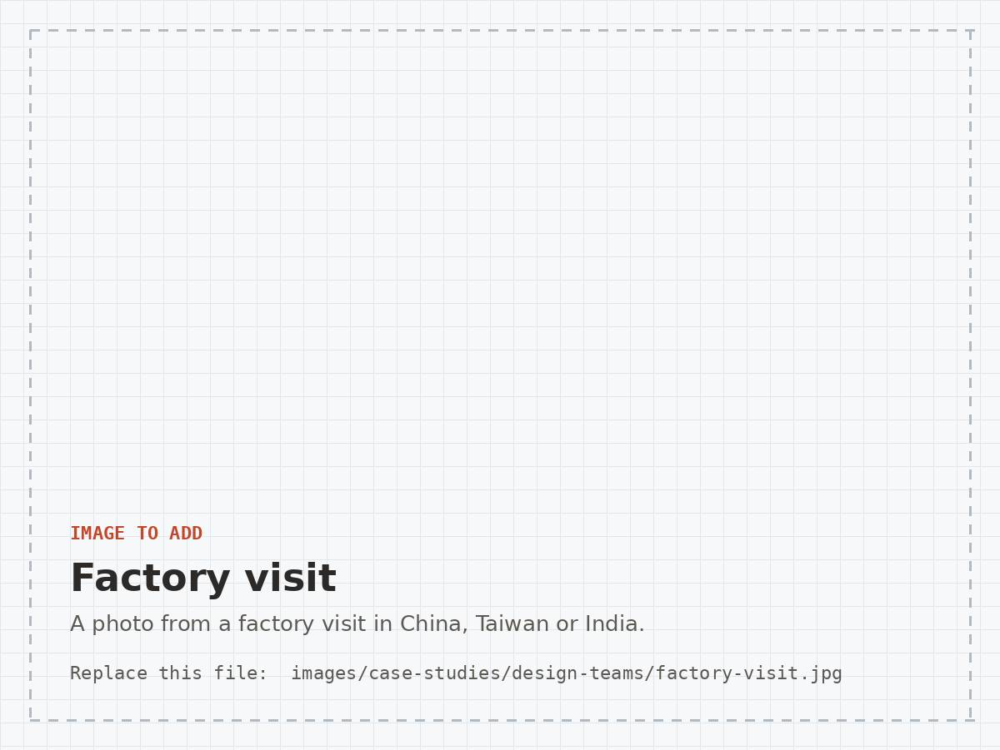
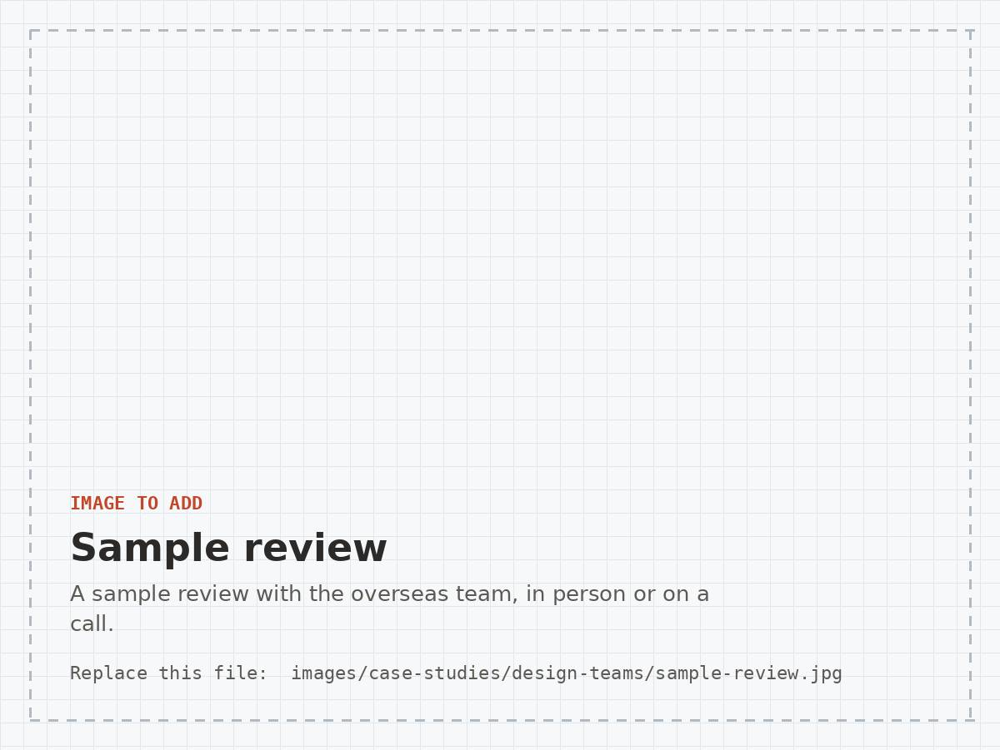

Building and Growing Design Teams
How I built, trained and led design teams across US and overseas offices, from design guides and toolkits to hiring and daily reviews.
Promoted five times
I spent sixteen years at Randa and was promoted five times, from Assistant Designer to Senior Design Director. I know what it takes to grow as a designer in a fast, multi-brand business, and that shapes how I lead.
Clear roles across 11+ brands
As Senior Design Director I led 6+ direct reports and worked with 50+ cross-functional partners across product development, sourcing, merchandising, sales, marketing and sustainability.
The team designed across 11+ licensed brands plus private label for six national retailers, so clear ownership and a shared process mattered as much as talent.

Growing leaders from within
Two things mattered most to me as a team leader: developing people and keeping them.
Built from within
Several of my original hires started as interns or assistant designers and have grown into leaders running their own design teams.
Low turnover, lasting quality
Turnover on my teams stayed very low. Experienced, long-tenured designers kept quality and consistency high across 11+ brands, each with its own standards.
That consistency matters to brand partners. They place real value on trust and the quality of our work, and that trust carries weight when contracts come up for renewal. Design was each brand’s primary point of contact, so I set one standard for the team.
Never let a brand partner down on vision, execution or deadlines.
The standard I set for every designer
Building that expectation into designers from their first day helped them grow, and it raised the value of the team and the company with our partners.
Writing it down
I built design guides and training toolkits for the team, including brand guides and onboarding materials for new designers. Shared standards meant a new designer could get up to speed quickly and the work stayed consistent from brand to brand.



Building new capabilities
When we moved to 3D sampling, I hired a full-time 3D designer from one of our China offices and built the workflow around that role. When we brought in AI tools, I ran the training and built a group of power users who helped the rest of the team.
Both are told in full in Taking Accessories Digital with 3D and Leading a Design Team into AI.



Working across time zones and factories
I worked closely with Randa’s China teams and one on one with partner factories, with trips to China, Taiwan and India to visit factories and meet the teams. Design reviews and feedback ran across our US and overseas offices.

